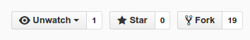

开始之前¶
病原微生物与测序技术¶
测序技术
高通量测序技术已经发展了很多年，广受欢迎的小型测序仪MiSeq和PGM已经经历住市场的考验。同时新的技术和仪器的出现仍在不停推动测序技术领域的应用，如PacBio旗下测序仪对长片段测序的应用；Nanopore MinIon测序仪在许多传染病疫情的现场实时测序应用；中国CDC在国内部分省级CDC开展的华大自主测序仪的应用等等。
随着Pulsenet China的逐渐完善，利用NGS技术对病原进行研究的工作迟早会成为一种公共卫生实验室检验人员的日常活动。这个工作包含了核酸提取、文库制备、测序、数据分析。前3项对于疾控中心实验室人员来说并非难事，但是数据分析对于医学或者生物学背景的CDCers来说往往成了最大的痛点。
对于科研工作，可以与专业的生信公司人员合作。但是对于日常工作，目前总体上还是缺乏完善的工作流。即使是部署上GUI程序如CLC Workbench，或者是类似Galaxy这样的web平台的应用，如果缺乏对数据分析最基本的概念，那也只能是空有一身装备却无法发挥。科技发展的速度非常快，对于疾控系统来说，加快应用新技术新方法的能力提升，特别是不擅长的计算、信息数据的分析能力，建议尽早布局。
关于我们¶

杭州市疾控中心微生物检验科病原微生物测序实验室：从2011年起开始关注NGS技术的发展和在CDC领域内的应用。目前已经基本建设了二代高通量测序和三代单分子实时测序实验室，也构建了生物信息计算硬件设备。通过有计划的学习和进修，初步具备了应用测序技术开展病原应急防控的能力。最近几年也在流感病毒、登革热病毒、诺如病毒和霍乱弧菌、副溶血性弧菌、单增李斯特菌、沙门菌、空肠弯曲菌、蜡样芽胞杆菌、阪崎肠杆菌等病原体的应急检测和科学研究方面做了一些工作。

关于本教程¶
随着高通量测序技术快速发展，小型台式测序仪的出现降低了高通量测序的门槛。对于开展微生物特别是病原微生物的测序工作的需求，在各种临床，科研以及政府的小型实验室中迅速扩展。目前已经上市的比较适合小型实验室的测序仪如 Illumina Miseq，Illumina NextSeq500，Ion S5，Ion PGM 等，即将上市的测序仪如 Illumina MiniSeq，Qiagen GeneReader 。除了传统的二代测序仪，不需要扩增的基于单分子测序技术的三代测序技术的 PacBio Sequel 和最近开展埃博拉实时测序项目的基于纳米孔技术的 Oxford MinION 产品都是非常适合开展病原微生物测序的平台。
测序数据的不断产出，需要生物信息学人才来参与到测序数据的分析以便获得有价值的生物学信息对于许多小型实验室来说，很难招募到优秀的生物信息学人才。对于非专业背景的人来说，命令行以及软件的安装可能是学习中遇到的首要难题。本笔记主要是通过介绍微生物，特别是病原细菌的高通量测序数据分析，帮助原来从事湿实验领域的同事能较好的了解和掌握高通量测序数据分析，将学习曲线变得平缓。同时也希望能对从事该领域的其他工作者提供便利，让大家在需要分析微生物基因组数据时，能有一个资料与实例汇集的手册可以快速参考和学习。
本笔记主要针对 Miseq 机器的产出数据开展分析，由于原理类似分析软件也大都可以应用在 Illumina 其他型号的仪器数据上。例子都是运行在安装了 Ubuntu 发行版的 Linux PC 服务器或者 Ubuntu 的个人电脑上。


本笔记使用开源工具 Gitbook 创作，介绍的工具也几乎均为开源软件。笔记中的许多内容都是来源于网络上的资料，部分来源可能有误或记忆不全，如果原作者发现没有内容链接，或者链接错误，请发送 电子邮件 通知修改。同时希望 Open Source 思想能对科研工作和科研工作者有所帮助。
本笔记代码托管在 Github, 可以访问 http://github.com/indexofire/pathongs.git 获得源码。测序技术是一个飞快发展的领域，教程中存在的错误和不足之处，欢迎提交 issues。
Fork笔记方法¶
- 在GitHub上访问本书源码，并fork成为自己的仓库。如下图所示，点击fork按钮，然后用
git clone到本地，设置好代码仓库用户信息。就可以修改并提交代码了。

$ git clone git@github.com:your_github_username/pathongs.git $ cd pathongs $ git config user.name "your github username" $ git config user.email your_email@something.com
- 对需要的内容做修改后提交，并
git push到之前fork的仓库。
$ git add -A
$ git commit -am "Fix issue #1: change typo: helo to hello"
$ git push
-
这样你自己的代码分支
master与源代码分支就会出现差异，要合并这些差异，就要在GitHub网站上提交pull request。如下图所示如果有代码。
-
由于源代码仓库也会经常更新或者合并其他pull request代码，需要定期使用源项目仓库内容来更新自己仓库内容。
$ git remote add upstream https://github.com/indexofire/pathongs.git $ git fetch upstream $ git checkout master $ git merge upstream/master $ git push origin master
内容操作提示¶
环境差异
大部分示例都是在 Ubuntu/Archlinux 环境下实现的。对于软件的安装和运行：
- 如果你使用的是 Windows10 bash环境或Windows虚拟机，可能会有一定出入，或无法运行的情况，具体问题自己动手解决。
- 如果你使用的是 Macintosh OS X 系统，除了一些软件安装和参数和路径设置外，大部分例子不需要修改即可运行。
- 如果你使用的是其他发行版，特别是不属于 Debian/Archlinux 体系的发行办，如红帽子系的 CentOS 等，则根据操作系统管理命令来运行或安装，与发行版无关的大部分 Linux 操作不存在区别。
Linux 与生物信息¶
Linux 与生物信息学紧密相关，许多软件运行和数据分析都适合或必须运行在 Linux 操作系统中。关于 Linux 的教学网络上不计其数，这里只对在测序数据分析中可能涉及到的一些基本 Linux 操作做一个简单的介绍。
生信运行环境¶
生信软件的运行平台环境一般分为以下几种：
- 基于web：可以在win/mac/linux/bsd等平台运行，只需系统有图形界面，并安装了现代化的主流浏览器如chrome/firefox等。
- 纯windows环境：常见的商业软件往往只能在win环境下运行，如bionumerics等。
- 多平台环境：许多生信软件是采用java开发，可以在多个平台下运行。一些C开发的程序也有win/mac/linux版本。
- 纯linux环境：许多生信软件只能在linux/mac环境下运行，其中大部分又是基于命令行而不需要图形界面。
Linux发行版¶
常见的Linux发行版：
- Ubuntu
- CentOS
- ArchLinux
无论是在服务器上安装，或者是个人桌面使用Linux，都需要考虑一个问题，那就是使用哪一个发行版。服务器常用的Linux发行版有CentOS, Debian, Ubuntu等，桌面发行版非常多，主要有基于Ubuntu，基于Archlinux等发行版。不同的发行版相当于使用不同的包管理软件，以及系统控制方式等方面存在区别。
比如包管理和安装的差别：
# 以下分别是：CentOS, Debian/Ubuntu, Archlinux 安装 bwa 软件的方式
$ sudo yum install bwa
$ sudo apt-get install bwa
$ sudo pacman -S bwa